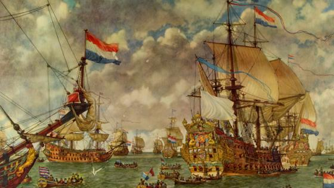

SCHEEPVAART MUSEUM

een rondleiding door het ScheepvaartMuseum
kies welke richting je op wilt:

een korte geschiedenis les
Het Scheepvaartmuseum is gevestigd in 's Lands Zeemagazijn. Dit monumentale gebouw uit 1656 werd ontworpen door Daniel Stalpaert als pakhuis van de Admiraliteit van Amsterdam. Het Zeemagazijn werd gebouwd toen Amsterdam de grootste haven ter wereld was. Nu, ruim 350 jaar later, is het Zeemagazijn nog altijd een indrukwekkend gebouw met veel karakter. De perfecte locatie voor Het Scheepvaartmuseum, dat hier sinds 1973 is gevestigd.1 / 3
aanvaring MS Oranje & Willem Ruys | 5 januari 1953
2 / 3

een nautisch kerstverhaal
3 / 3

Zie ginds komt de stoomboot
pacbaronet
Hilversum, The Netherlands
Good for families, couples and it’s worthwhile


Very nice visit. Good facilities and pretty well explained. Wardrobe room is very good with loads of lockers. Give yourself a couple of hours (between 2-3 hours) to visit properly all bridges and the ship outside.